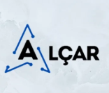

Instalações elétricas
Execução de pontos, quadros, circuitos, iluminação, tomadas e estruturas elétricas para novos ambientes.

OrçamentoUberlândia/MG e região
Instalações, manutenções e adequações elétricas para residências, comércios e empresas que precisam de um serviço confiável, limpo e bem executado.
O que a Alçar resolve
Uma elétrica mal feita pode gerar queda de energia, aquecimento, risco de choque, queima de equipamentos e prejuízo. A Alçar entra para diagnosticar, corrigir e executar com responsabilidade.
Execução de pontos, quadros, circuitos, iluminação, tomadas e estruturas elétricas para novos ambientes.
Identificação de falhas, troca de componentes, revisão de instalações e correção de problemas elétricos.
Apoio técnico para adequações em ambientes residenciais, comerciais e obras, seguindo boas práticas e NRs.
Por que contratar
Sobre o expert
À frente da Alçar, João atua com foco em segurança, responsabilidade técnica e execução bem feita. Seu trabalho atende quem busca um profissional para resolver serviços elétricos com clareza, compromisso e atenção às normas.
Dúvidas frequentes
O atendimento é em Uberlândia/MG e região. Para cidades próximas, o ideal é chamar no WhatsApp e informar o local do serviço.
Sim. A proposta da página contempla residências, comércios, obras e empresas que precisam de instalação, manutenção ou adequação elétrica.
O primeiro contato pode ser pelo WhatsApp. Para alguns casos, João pode solicitar fotos, vídeos ou uma visita técnica para avaliar melhor.
PCMSO é o Programa de Controle Médico de Saúde Ocupacional. PGR é o Programa de Gerenciamento de Riscos. OS significa Ordem de Serviço. Esses documentos são comuns em rotinas de segurança do trabalho e prestação de serviços técnicos.
CTA matador
Chame a Alçar agora, envie fotos ou explique o problema e receba o próximo passo para orçamento.
Chamar no WhatsApp agora